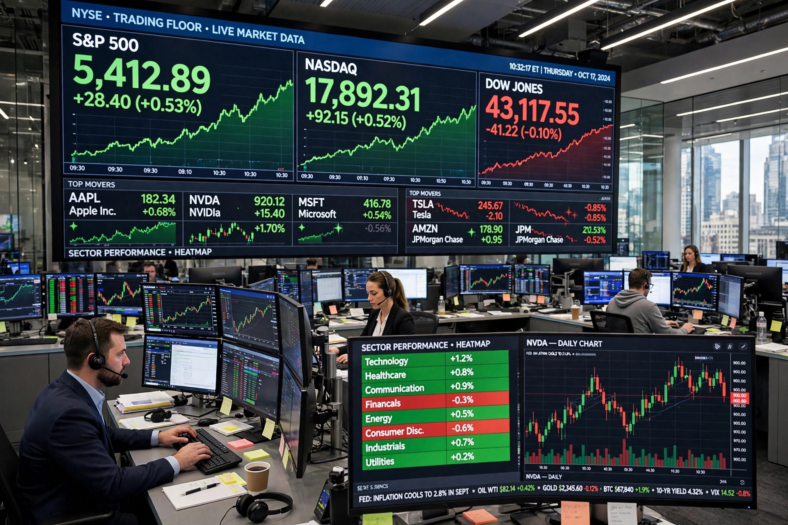

A market economy is an economic system in which the decisions regarding investment, production and distribution to consumers are guided by the price signals created by the forces of supply and demand. The major characteristic of a market economy is the existence of factor markets that coordinate the allocation of capital and the factors of production, based predominantly on private property, freedom of contract and competition. It is contrasted with a planned economy, in which a central authority allocates resources, and most real economies are "mixed", combining markets with public provision and regulation.
The "varieties of capitalism" literature distinguishes liberal market economies (such as the United States and United Kingdom), coordinated market economies (such as Germany, whose "social market economy" blends competition with a welfare state), and the Nordic model combining free markets with extensive social insurance. China describes its system as a "socialist market economy", with markets operating alongside a large state sector and industrial policy. Transitions from planning toward markets after 1989 relied heavily on privatisation.
Critics argue that unregulated markets generate inequality, instability and boom–bust cycles, underprovide public goods, and ignore environmental costs; defenders reply that markets remain the most effective known mechanism for coordinating dispersed knowledge and generating prosperity, and that their failings are best addressed by targeted regulation rather than planning.